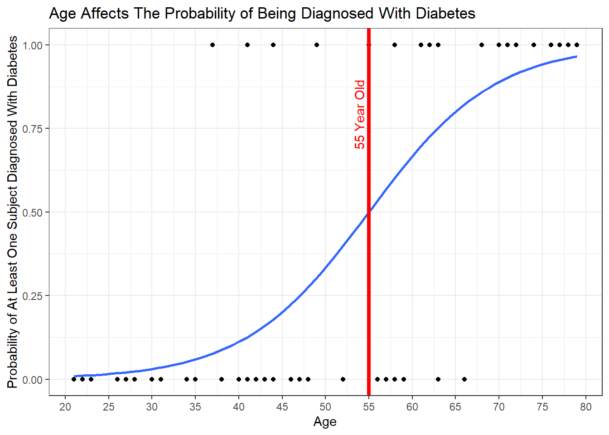

Background
In today’s analysis, we’ll use a diabetes dataset generated by ChatGpt to perform a logistic Regression. The data contains the Age of the subjects, and the Diabetes variable, indicating whether a subject has diabetes(1) or not(0). Medical News Today, an health article website claims that type 2 diabetes usually occur between the ages 45 and 64. so, with the aim to study and predict if a person has diabetes based on their age, we’ll test the accuracy of the model using the AI data to find out if type 2 diabetes develops around 55 years Old.
Logistic Model
The probability of at least one Diabetes diagnostic is present based on the known age is given by the following logistic regression model.
\[ P(Y_i = 1|\, x_i) = \frac{e^{\beta_0 + \beta_1 x_i}}{1+e^{\beta_0 + \beta_1 x_i}} = \pi_i \]
In this model, for each subject i:
\[ Y_i=1\text{, denotes at least one Diabetes diagnosis for the given Age,} \\ Y_i=0\text{, denotes no Diabetes diagnosis (Healthy subject), and} \\ x_i\text{ , denotes the Age of the subject per observation.} \]
If β1 is zero in the above model, then X_i(Age) provides no insight about the probability of an diagnose diabetes result. If not zero however, then Age plays an important role in the probability of a Diabetes result.
\[ H_0:\beta_1=0 \\ H_a:\beta_1\neq0 \\ \alpha = 0.05 \]
Fitting the Model
| Estimate | Std. Error | z value | Pr(>|z|) | |
|---|---|---|---|---|
| (Intercept) | -7.617 | 1.814 | -4.199 | 2.684e-05 |
| Age | 0.1385 | 0.03266 | 4.24 | 2.232e-05 |
(Dispersion parameter for binomial family taken to be 1 )
| Null deviance: | 82.11 on 59 degrees of freedom |
| Residual deviance: | 43.01 on 58 degrees of freedom |
This gives the estimated model for πi as
\[ P(Y_i = 1|\, x_i) = \frac{e^{-7.617 + 0.1385x_i}}{1+e^{-7.617 + 0.1385x_i}} = \pi_i \]
Where b0 = -7.617 is our value of (Intercept) which estimates β0 and b1=0.1385 is the value of Age which estimates β1.
The p-value from Age shows significance with (p = 2.232e-05) giving sufficient evidence to conclude that Age affects the probability of a patient testing positive for diabetes in the study.
Visualizing the Model
The plot shows how likely it is to be diagnosed with type 2 diabetes around the age of 55 years old.
ggplot(data, mapping = aes(y = Diabetes, x = Age)) +
geom_point() +
scale_x_continuous(breaks = seq(20,80,5)) +
geom_smooth(method = "glm", method.args = list(family="binomial"), se=FALSE) +
labs(y = "Probability of At Least One Subject Diagnosed With Diabetes",
title = "Age Affects The Probability of Being Diagnosed With Diabetes") +
geom_vline(xintercept = 55, color = "red", size = 1.5) +
annotate("text",
x = 55,
y = 1, # Adjust y position as needed
label = "55 Year Old",
angle = 90, # Vertical label
vjust = -0.5,
hjust = 1.5,
color = "red")+
theme_bw()## `geom_smooth()` using formula = 'y ~ x'
Diagnosing the Model
To demonstrate that the logistic regression is a good fit to these data we apply the Hosmer-Lemeshow goodness of fit test
| Test statistic | df | P value |
|---|---|---|
| 1.081 | 1 | 0.2984 |
Since the null hypothesis is that the logistic regression is a good fit for the data, we claim that the logistic regression is appropriate (p-value = 0.2984).
Conclusion
the value of \(e^{0.1385} \approx 1.15\) shows that the odds of being diagnosed with diabetes increases by a factor of 1.15 for every increase in Age. In other words, the odds of an diabetes diagnosis increases by 15% (1.15-1) for every increase in Age. To be more clear, for a Age of 55, our model puts the probability of a diabetes diagnosis at:
\[ P(Y_i = 1|\, x_i) = \frac{e^{-7.617 + 0.1385*55}}{1+e^{-7.617 + 0.1385*55}} = \pi_i \]
The probability of being diagnosed with type 2 diabetes at 55 years old is about 50% \((\hat{\pi_i} \approx 0.500035)\), which supports Medical News Toda’s claim and the regressions probability rate as subjects get older.
References/Credits
The dataset used was constructed by AI for the purposes of this study. Further references are listed below: